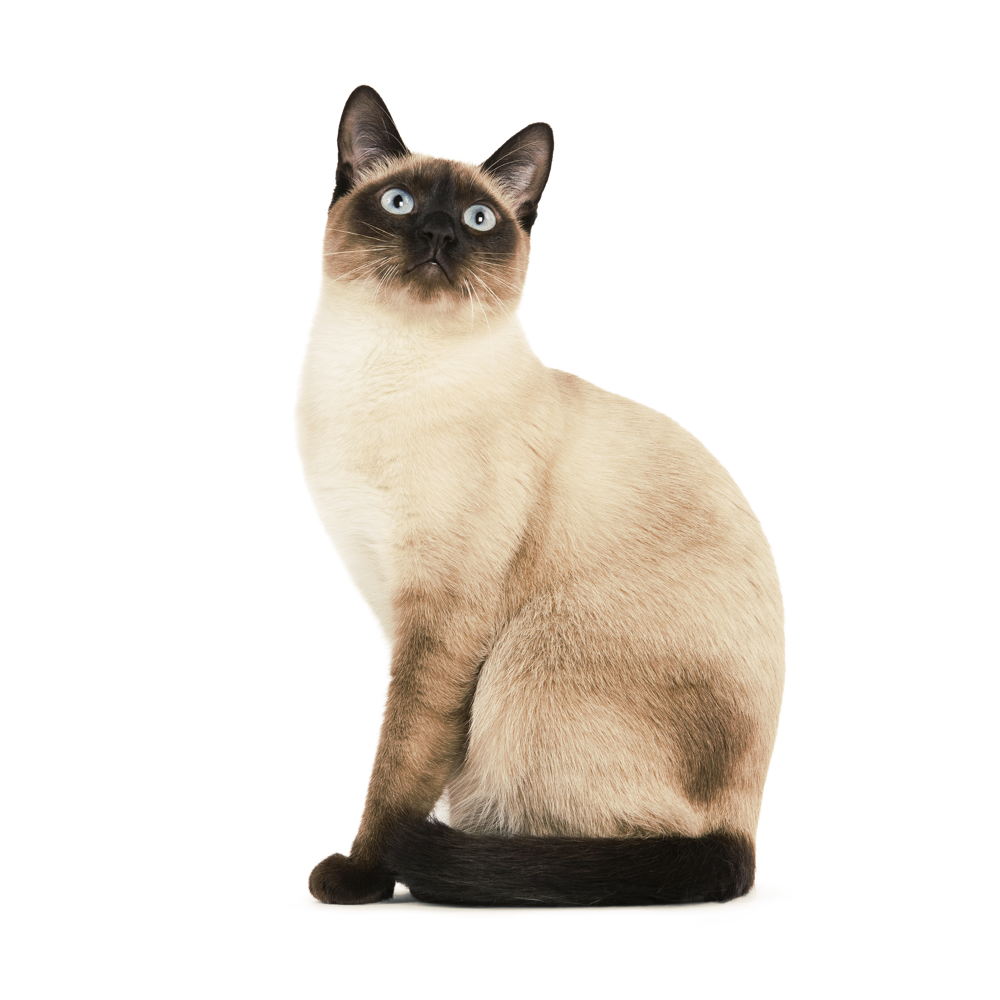

Тайская
Характеристика
| Образ жизни | В помещении |
| Тип шерсти | Короткошерстная |
| Размер | Средний |
| Образ жизни | В помещении |
| Тип шерсти | Короткошерстная |
| Размер | Средний |
У кошек тайской породы грациозное на вид тело среднего размера, с хорошо развитой мускулатурой. Шерсть короткая и блестящая. Отличительной их характеристикой является наличие особого окраса: колорпойнт со светлым туловищем, контрастирующим с темным оттенком головы, лап и хвоста. Голова в форме модифицированного клина с закругленными контурами. Уши среднего размера, глаза большие, овальные, насыщенного голубого цвета. Хвост средней длины, слегка сужающийся к кончику.
Тайские кошки по характеру чрезвычайно общительны. Они всегда стремятся находиться рядом с людьми, особенно со своими владельцами. Эти представители семейства кошачьих очень активны и игривы (но спокойнее сиамских) и превосходно ладят с другими домашними животными.
Тайских кошек окраса колорпойнт разводили в Таиланде с древних времен. В XIX веке британцы обнаружили в Таиланде (который тогда назывался Сиамом) необычных кошек. Они отличались от всех известных к тому времени пород. Несколько таких особей перевезли в Европу и США, где они получили название «сиамских» по стране происхождения. Однако тайская кошка отличается от современных сиамских тем, что ей удалось сохранить свои первоначальные особенности. В 1990 году в Германии всемирная федерация WCF признала тайцев как самостоятельную породу с собственным стандартом, основанным на изначальных характеристиках кошек, вывезенных из Таиланда. В 2010 году порода была признана и международной ассоциацией TICA.